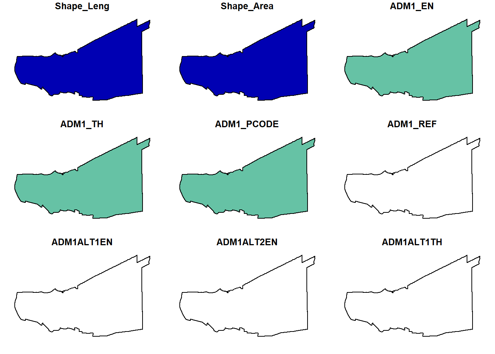

pacman::p_load(sf, tidyverse, raster, tmap, spNetwork,dplyr, viridis, spatstat)Take-home Exercise 1
Take-home Exercise 1: Geospatial Analytics for Public Good
Description
The specific objectives of this take-home exercise are as follows:
To visualize the spatio-temporal dynamics of road traffic accidents in BMR using appropriate statistical graphics and geovisualization methods.
To conduct detailed spatial analysis of road traffic accidents using appropriate Network Spatial Point Patterns Analysis methods.
To conduct detailed spatio-temporal analysis of road traffic accidents using appropriate Temporal Network Spatial Point Patterns Analysis methods.
Loading the packages required
Loading Road Accident data in Thailand
acc <- read_csv("data/rawdata/thai_road_accident_2019_2022.csv") %>%
mutate(Month_num = month(incident_datetime)) %>%
mutate(Month_fac = month(incident_datetime,
label = TRUE,
abbr = TRUE)) %>%
mutate(dayofweek = day(incident_datetime))write_rds(acc, "data/rds/acc.rds") #to write accident file into rdsacc <- read_rds("data/rds/acc.rds") #to read accident file from rds
acc_sf <- acc %>%
filter(!is.na(longitude) & !is.na(latitude)) %>%
st_as_sf(coords = c("longitude", "latitude")) %>%
st_set_crs(4326)roads <- st_read(dsn = "data/rawdata/",
layer = "hotosm_tha_roads_lines_shp")roads <- st_set_crs(roads, 4326)st_crs(roads)head(roads)Note: to select columns name_en, highway, surface, lanes, osm_id, osm_type, geometry
# Select the desired columns
selected_cols <- c("name_en", "highway", "surface", "lanes", "osm_id", "osm_type", "geometry")
roads_selected <- roads[, selected_cols]head(roads_selected)write_rds(roads_selected, "data/rds/road_selected.rds") #to write roads file into rdsroads_selected <- read_rds("data/rds/road_selected.rds") #to read roads file from rdshead(roads_selected)Simple feature collection with 6 features and 6 fields
Geometry type: MULTILINESTRING
Dimension: XY
Bounding box: xmin: 100.7831 ymin: 13.73046 xmax: 100.7936 ymax: 13.74666
Geodetic CRS: WGS 84
name_en highway surface lanes osm_id osm_type
1 Chalong Krung Road secondary paved <NA> 1125681229 ways_line
2 Soi Chalong Krung 1/1 residential <NA> <NA> 594401607 ways_line
3 <NA> secondary_link <NA> <NA> 472283206 ways_line
4 <NA> service <NA> <NA> 594401608 ways_line
5 Chalong Krung Road secondary concrete 2 116847248 ways_line
6 <NA> service <NA> <NA> 317485095 ways_line
geometry
1 MULTILINESTRING ((100.7913 ...
2 MULTILINESTRING ((100.7882 ...
3 MULTILINESTRING ((100.7844 ...
4 MULTILINESTRING ((100.7873 ...
5 MULTILINESTRING ((100.7831 ...
6 MULTILINESTRING ((100.7931 ...admin_boundaries <- st_read(dsn = "data/rawdata/",
layer = "tha_admbnda_adm1_rtsd_20220121")Reading layer `tha_admbnda_adm1_rtsd_20220121' from data source
`C:\Users\jia_y\OneDrive - Singapore Management University\Semester 4\ISSS626-G1 Geo Spatial Analytics and Applications\jylau91\ISSS626-GAA\Take-home_Ex\Take-home_Ex01\data\rawdata'
using driver `ESRI Shapefile'
Simple feature collection with 77 features and 16 fields
Geometry type: MULTIPOLYGON
Dimension: XY
Bounding box: xmin: 97.34336 ymin: 5.613038 xmax: 105.637 ymax: 20.46507
Geodetic CRS: WGS 84head(admin_boundaries)admin_population <- read_csv("data/rawdata/bmr_population.csv")admin_selected <- admin_boundaries %>%
filter(ADM1_EN %in%
c("Bangkok", "Samut Prakan", "Nonthaburi", "Pathum Thani", "Nakhon Pathom", "Samut Sakhon")) %>%
left_join(admin_population, by ="ADM1_EN")acc_sf_within_bmr <- st_join(acc_sf, admin_selected) %>%
filter(!is.na(ADM1_EN))roads_within_bmr <- st_join(roads_selected, admin_selected) %>%
filter(!is.na(ADM1_EN))write_rds(roads_within_bmr, "data/rds/road_within_bmr.rds") #to write roads in BMR file into rdsroads_within_bmr <- read_rds("data/rds/road_within_bmr.rds") #to read roads file from rdstm_shape(roads_within_bmr) +
tm_lines()tm_shape(roads_within_bmr) +
tm_lines() +
tm_shape(acc_sf_within_bmr) +
tm_dots(col = "red")tmap_mode("plot")qtm(acc_sf_within_bmr,)accident_summary <- acc_sf_within_bmr %>%
group_by(ADM1_EN, Month_num) %>%
summarise(accident_count = n(), groups = 'drop')# Create a monthly accident count plot
ggplot(accident_summary, aes(x = Month_num, y = accident_count, fill = ADM1_EN)) +
geom_bar(stat = "identity", position = "dodge") +
labs(title = "Monthly Road Traffic Accidents in BMR",
x = "Month",
y = "Accident Count") +
scale_x_continuous(breaks = 1:12, labels = month.abb) +
theme_minimal()# Merge accident_summary with admin_selected to have spatial data
admin_selected_with_accidents <- admin_selected %>%
st_join(accident_summary, join = st_intersects) %>%
mutate(accident_density = accident_count / (population/10000))
# Check if accident counts are merged properly
head(admin_selected_with_accidents)Simple feature collection with 6 features and 22 fields
Geometry type: MULTIPOLYGON
Dimension: XY
Bounding box: xmin: 100.3279 ymin: 13.49339 xmax: 100.9385 ymax: 13.9552
Geodetic CRS: WGS 84
Shape_Leng Shape_Area ADM1_EN.x ADM1_TH ADM1_PCODE ADM1_REF ADM1ALT1EN
1 2.417227 0.1313387 Bangkok กรุงเทพมหานคร TH10 <NA> <NA>
1.1 2.417227 0.1313387 Bangkok กรุงเทพมหานคร TH10 <NA> <NA>
1.2 2.417227 0.1313387 Bangkok กรุงเทพมหานคร TH10 <NA> <NA>
1.3 2.417227 0.1313387 Bangkok กรุงเทพมหานคร TH10 <NA> <NA>
1.4 2.417227 0.1313387 Bangkok กรุงเทพมหานคร TH10 <NA> <NA>
1.5 2.417227 0.1313387 Bangkok กรุงเทพมหานคร TH10 <NA> <NA>
ADM1ALT2EN ADM1ALT1TH ADM1ALT2TH ADM0_EN ADM0_TH ADM0_PCODE date
1 <NA> <NA> <NA> Thailand ประเทศไทย TH 2019-02-18
1.1 <NA> <NA> <NA> Thailand ประเทศไทย TH 2019-02-18
1.2 <NA> <NA> <NA> Thailand ประเทศไทย TH 2019-02-18
1.3 <NA> <NA> <NA> Thailand ประเทศไทย TH 2019-02-18
1.4 <NA> <NA> <NA> Thailand ประเทศไทย TH 2019-02-18
1.5 <NA> <NA> <NA> Thailand ประเทศไทย TH 2019-02-18
validOn validTo population ADM1_EN.y Month_num accident_count groups
1 2022-01-22 -001-11-30 8833400 Bangkok 1 493 drop
1.1 2022-01-22 -001-11-30 8833400 Bangkok 2 465 drop
1.2 2022-01-22 -001-11-30 8833400 Bangkok 3 489 drop
1.3 2022-01-22 -001-11-30 8833400 Bangkok 4 499 drop
1.4 2022-01-22 -001-11-30 8833400 Bangkok 5 461 drop
1.5 2022-01-22 -001-11-30 8833400 Bangkok 6 416 drop
geometry accident_density
1 MULTIPOLYGON (((100.6139 13... 0.5581090
1.1 MULTIPOLYGON (((100.6139 13... 0.5264111
1.2 MULTIPOLYGON (((100.6139 13... 0.5535807
1.3 MULTIPOLYGON (((100.6139 13... 0.5649014
1.4 MULTIPOLYGON (((100.6139 13... 0.5218829
1.5 MULTIPOLYGON (((100.6139 13... 0.4709398tm_shape(admin_selected_with_accidents) +
tm_fill("accident_count", style = "quantile", palette = "Blues", title = "Accident Count") +
tm_borders(col = "black") +
tm_text("ADM1_EN.x") + # Add province names as labels
tm_layout(title = "Accident Count by Region",
title.size= 1.2,
legend.title.size = 0.9,
legend.title.fontface = "bold",
legend.position = c("left","bottom"))tm_shape(admin_selected) +
tm_fill("population", style = "quantile", palette = "Blues", title = "Population") +
tm_borders(col = "black") +
tm_text("ADM1_EN") + # Add province names as labels
tm_layout(title = "Population by Region",
title.size= 1.2,
legend.title.size = 0.9,
legend.title.fontface = "bold",
legend.position = c("left","bottom"))Obtain 2020 population data: https://www.citypopulation.de/en/thailand/prov/admin/B__bangkok_metropolitan/
Visual by density instead
# Create a monthly accident count plot
ggplot(admin_selected_with_accidents, aes(x = Month_num, y = accident_density, fill = ADM1_EN.x)) +
geom_bar(stat = "identity", position = "dodge") +
labs(title = "Monthly Road Traffic Accidents in BMR",
x = "Month",
y = "Accident Count") +
scale_x_continuous(breaks = 1:12, labels = month.abb) +
theme_minimal()Events in April leading to the increase in accidents
Songkran in Thailand (https://www.statista.com/topics/11546/songkran-in-thailand/#topicOverview)
tm_shape(admin_selected_with_accidents) +
tm_fill("accident_density", style = "quantile", palette = "Blues", title = "Accident Density") +
tm_borders(col = "black") +
tm_text("ADM1_EN.x") + # Add province names as labels
tm_layout(title = "Accident Population Density (per 10'000) by Region",
title.size= 1.2,
legend.title.size = 0.8,
legend.title.fontface = "bold",
legend.position = c("left","bottom"))Spatial Point Pattern Analysis
# Transform accident data to UTM Zone 47N
acc_sf_projected <- st_transform(acc_sf_within_bmr, crs = 32647)
# Transform admin boundaries to UTM Zone 47N if necessary
admin_selected_proj <- st_transform(admin_selected, crs = 32647)# Cast to MULTIPOLYGON if necessary
admin_selected_multipolygon <- st_cast(admin_selected_proj, "MULTIPOLYGON")
# Create a window from the admin boundaries
window <- as.owin(st_geometry(admin_selected_multipolygon))# Extract coordinates from projected accident data
coords <- st_coordinates(acc_sf_projected)
# Create the point pattern object
accidents_ppp <- ppp(x = coords[, 1],
y = coords[, 2],
window = window)class(accidents_ppp) # Should return "ppp"
summary(accidents_ppp) # Summary of the point pattern# Create a spatial point pattern object
accident_ppp <- ppp(st_coordinates(acc_sf_projected)[, 1],
st_coordinates(acc_sf_projected)[, 2],
window = as.owin(admin_selected_multipolygon))kde_result <- density(accident_ppp, sigma = bw.ppl(accident_ppp))
plot(kde_result, main = "Kernel Density Estimate of Accidents per Metre")Rescale the unit of measurement from meter to kilometer as CRS EPSG:32647 (WGS84) is in metres.
accident_ppp.km <- rescale.ppp(accident_ppp, 1000, "km")kde_result.km <- density(accident_ppp.km, sigma=bw.ppl, edge=TRUE, kernel="gaussian")
plot(kde_result.km, main = "Kernel Density Estimate of Accidents per Kilometre")bw <- bw.ppl(accident_ppp.km)
bwComputing KDE by using fixed bandwith
kde_result.km_500 <- density(accident_ppp.km, sigma=0.5, edge=TRUE, kernel="gaussian")
plot(kde_result.km_500)Computing KDE by using adaptive bandwith
kde_result.km_adaptive <- adaptive.density(accident_ppp.km, method="kernel")
plot(kde_result.km_adaptive)par(mfrow=c(1,2))
plot(kde_result.km_500, main = "Fixed bandwidth")
plot(kde_result.km_adaptive, main = "Adaptive bandwidth")Converting KDE into a grid object
kde_result.km_500real-valued pixel image
128 x 128 pixel array (ny, nx)
enclosing rectangle: [587.89, 712.44] x [1484.4, 1579.1] km# Extract the pixel coordinates and values from the 'im' object
coords <- expand.grid(x = kde_result.km_500$xcol, y = kde_result.km_500$yrow)
values <- as.vector(t(kde_result.km_500$v))# Create a SpatialPixelsDataFrame
sp_pixels <- SpatialPixelsDataFrame(points = coords,
data = data.frame(value = values),
proj4string = CRS(as.character(NA)))# Convert the SpatialPixelsDataFrame to a SpatialGridDataFrame
gridded_kde_result.km_500 <- as(sp_pixels, "SpatialGridDataFrame")# Use spplot to plot the SpatialGridDataFrame
spplot(gridded_kde_result.km_500)Converting grid output into a raster
kde_result.km_500_raster <- raster(kde_result.km_500)
kde_result.km_500_rasterclass : RasterLayer
dimensions : 128, 128, 16384 (nrow, ncol, ncell)
resolution : 0.973023, 0.7395512 (x, y)
extent : 587.8935, 712.4405, 1484.414, 1579.076 (xmin, xmax, ymin, ymax)
crs : NA
source : memory
names : layer
values : -6.366262e-15, 132.7507 (min, max)projection(kde_result.km_500_raster) <- CRS("+init=EPSG:32647")
kde_result.km_500_rasterclass : RasterLayer
dimensions : 128, 128, 16384 (nrow, ncol, ncell)
resolution : 0.973023, 0.7395512 (x, y)
extent : 587.8935, 712.4405, 1484.414, 1579.076 (xmin, xmax, ymin, ymax)
crs : +proj=utm +zone=47 +datum=WGS84 +units=m +no_defs
source : memory
names : layer
values : -6.366262e-15, 132.7507 (min, max)Visualising the output in tmap
tm_shape(kde_result.km_500_raster) +
tm_raster("layer", palette = "viridis") +
tm_layout(legend.position = c("left", "bottom"), frame = TRUE)nonthaburi <- admin_selected_multipolygon %>%
filter(ADM1_EN == "Nonthaburi")
pathum_thani <- admin_selected_multipolygon %>%
filter(ADM1_EN == "Pathum Thani")
bangkok <- admin_selected_multipolygon %>%
filter(ADM1_EN == "Bangkok")
samut_prakan <- admin_selected_multipolygon %>%
filter(ADM1_EN == "Samut Prakan")par(mfrow=c(2,2))
plot(nonthaburi, main = "Nonthaburi")plot(pathum_thani, main = "Pathum Thani")
plot(bangkok, main = "Bangkok")plot(samut_prakan, main = "Samut Prakan")Creating owins for SPP analysis of each individual province
nonthaburi_owin = as.owin(nonthaburi)
pathum_thani_owin = as.owin(pathum_thani)
bangkok_owin = as.owin(bangkok)
samut_prakan_owin = as.owin(samut_prakan)Extract accidents at each specific province of BMR.
accident_nonthaburi_ppp = accident_ppp[nonthaburi_owin]
accident_pathum_thani_ppp = accident_ppp[pathum_thani_owin]
accident_bangkok_ppp = accident_ppp[bangkok_owin]
accident_samut_prakan_ppp = accident_ppp[samut_prakan_owin]Next, rescale.ppp() function is used to trasnform the unit of measurement from metre to kilometre.
accident_nonthaburi_ppp.km = rescale.ppp(accident_nonthaburi_ppp, 1000, "km")
accident_pathum_thani_ppp.km = rescale.ppp(accident_pathum_thani_ppp, 1000, "km")
accident_bangkok_ppp.km = rescale.ppp(accident_bangkok_ppp, 1000, "km")
accident_samut_prakan_ppp.km = rescale.ppp(accident_samut_prakan_ppp, 1000, "km")To plot the four provinces of interest and their accident cases.
par(mfrow=c(1,1))
plot(accident_nonthaburi_ppp.km, main="Nonthaburi")plot(accident_pathum_thani_ppp.km, main="Pathum Thani")plot(accident_bangkok_ppp.km, main="Bangkok")plot(accident_samut_prakan_ppp.km, main="Samut Prakan")Plotting the KDE of these four provinces of interest using bw.diggle method to derive the bandwith of each province.
par(mfrow=c(1,1))
plot(density(accident_nonthaburi_ppp.km,
sigma=bw.diggle,
edge=TRUE,
kernel="gaussian"),
main="Nonthaburi")plot(density(accident_pathum_thani_ppp.km,
sigma=bw.diggle,
edge=TRUE,
kernel="gaussian"),
main="Pathum Thani")plot(density(accident_bangkok_ppp.km,
sigma=bw.diggle,
edge=TRUE,
kernel="gaussian"),
main="Bangkok")plot(density(accident_samut_prakan_ppp.km,
sigma=bw.diggle,
edge=TRUE,
kernel="gaussian"),
main="Samut Prakan")Computing fixed bandwith KDE
For comparison purposes, we will use 350m as the bandwith.
par(mfrow=c(1,1))
plot(density(accident_nonthaburi_ppp.km,
sigma=0.35,
edge=TRUE,
kernel="gaussian"),
main="Nonthaburi")plot(density(accident_pathum_thani_ppp.km,
sigma=0.35,
edge=TRUE,
kernel="gaussian"),
main="Pathum Thani")plot(density(accident_bangkok_ppp.km,
sigma=0.35,
edge=TRUE,
kernel="gaussian"),
main="Bangkok")plot(density(accident_samut_prakan_ppp.km,
sigma=0.35,
edge=TRUE,
kernel="gaussian"),
main="Samut Prakan")
Nearest Neighbour Analysis
In this section, we will perform the Clark-Evans test of aggregation for a spatial point pattern by using clarkevans.test() of statspat.
The test hypotheses are:
Ho = The distribution of accidents are randomly distributed.
H1= The distribution of accidents are not randomly distributed.
The 95% confident interval will be used.
Clarks and Evans Test (Bangkok Metropolitan Area)
clarkevans.test(accident_ppp,
correction="none",
clipregion="window",
alternative=c("clustered"),
nsim=99)
Clark-Evans test
No edge correction
Z-test
data: accident_ppp
R = 0.19104, p-value < 2.2e-16
alternative hypothesis: clustered (R < 1)R-value (Clark-Evans ratio) of less than 1 in this set of test results indicates clustering.
The p-value < 2.2e-16, is a very small p-value ( <0.05 - 95% significance level) suggests that the test result is statistically significant. The null hypothesis of CSR (randomness) can be rejected.
The spatial point pattern for accident_ppp shows a significant degree of clustering (R<1), given the small p-value we have sufficient evidence to reject the null hypothesis that the points are not randomly distributed and is clustered as the R-value is less than 1.
Clarks and Evans Test (Nonthaburi)
clarkevans.test(accident_nonthaburi_ppp,
correction="none",
clipregion="window",
alternative=c("clustered"),
nsim=99)
Clark-Evans test
No edge correction
Z-test
data: accident_nonthaburi_ppp
R = 0.38919, p-value < 2.2e-16
alternative hypothesis: clustered (R < 1)Clarks and Evans Test (Pathum Thani)
clarkevans.test(accident_pathum_thani_ppp,
correction="none",
clipregion="window",
alternative=c("clustered"),
nsim=99)
Clark-Evans test
No edge correction
Z-test
data: accident_pathum_thani_ppp
R = 0.24771, p-value < 2.2e-16
alternative hypothesis: clustered (R < 1)Clarks and Evans Test (Bangkok)
clarkevans.test(accident_bangkok_ppp,
correction="none",
clipregion="window",
alternative=c("clustered"),
nsim=99)
Clark-Evans test
No edge correction
Z-test
data: accident_bangkok_ppp
R = 0.1211, p-value < 2.2e-16
alternative hypothesis: clustered (R < 1)Clarks and Evans Test (Samut Prakan)
clarkevans.test(accident_samut_prakan_ppp,
correction="none",
clipregion="window",
alternative=c("clustered"),
nsim=99)
Clark-Evans test
No edge correction
Z-test
data: accident_samut_prakan_ppp
R = 0.14367, p-value < 2.2e-16
alternative hypothesis: clustered (R < 1)R-value (Clark-Evans ratio) is observed to be less than 1 for all four areas of interest.
The p-value < 2.2e-16, is a very small p-value ( <0.05 - 95% significance level) suggests that the test results are statistically significant. The null hypothesis of CSR (randomness) can be rejected.
The spatial point pattern for all accident spatial points in four provinces shows a significant degree of clustering (R<1), given the small p-value we have sufficient evidence to reject the null hypothesis that the points are not randomly distributed and is clustered as the R-value is less than 1.
SPP Analysis by Months
# Transform accident data to UTM Zone 47N
# Split accident data by Month_num
accidents_by_month <- split(acc_sf_projected, acc_sf_projected$Month_num)
# Create an empty list to store the ppp objects for each month
ppp_list <- list()
# Loop through each month and create a ppp object
for (i in 1:12) {
# Extract accidents for the current month
acc_month <- accidents_by_month[[i]]
# Create a ppp object for the current month
ppp_list[[i]] <- ppp(st_coordinates(acc_month)[, 1],
st_coordinates(acc_month)[, 2],
window = as.owin(admin_selected_multipolygon))
}
# Optionally, name each ppp object by month
names(ppp_list) <- month.abb[1:12]
# Check the ppp object for January (example)
ppp_list[["Jan"]]Planar point pattern: 1149 points
window: polygonal boundary
enclosing rectangle: [587893.5, 712440.5] x [1484413.7, 1579076.3] units# Create an empty list to store the KDE results for each month
kde_results <- list()
# Loop through each month to perform KDE
for (i in 1:12) {
# Extract the ppp object for the current month
accident_ppp_month <- ppp_list[[i]]
# Perform KDE for the current month's ppp object
kde_results[[i]] <- density(accident_ppp_month, sigma = 0.5, edge = TRUE, kernel = "gaussian")
}
# Optionally, name each KDE result by month
names(kde_results) <- month.abb[1:12]# Set up a 3x4 plotting grid
par(mfrow = c(1, 1))
# Loop through the months and plot the KDE for each month
for (i in 1:12) {
plot(kde_results[[i]], main = month.abb[i], col = viridis::viridis(100),
xlab = "X", ylab = "Y", las = 1)
}
Network KDE (NKDE) Analysis
In this section, we will perform NKDE analysis by using functions provided in spNetwork package.
Spatial Lines (road network) object in BMR is cut into lixels.
roads_within_bkk <- roads_within_bmr %>%
filter(ADM1_EN =="Bangkok")
acc_sf_projected_bkk <- acc_sf_projected %>%
filter(ADM1_EN =="Bangkok")lixels <- lixelize_lines(roads_within_bkk,
500,
mindist = 350)Generating samples of the road network using lines_center() of spNetwork.
samples <-lines_center(lixels)Perform NKDE
acc_bkk_32647 <- st_zm(acc_sf_projected_bkk)
acc_bkk_32647Simple feature collection with 6090 features and 36 fields
Geometry type: POINT
Dimension: XY
Bounding box: xmin: 644139 ymin: 1505014 xmax: 708461.2 ymax: 1542968
Projected CRS: WGS 84 / UTM zone 47N
# A tibble: 6,090 × 37
acc_code incident_datetime report_datetime province_th province_en
* <dbl> <dttm> <dttm> <chr> <chr>
1 629691 2019-01-01 03:05:00 2019-01-01 03:05:00 กรุงเทพมหานคร Bangkok
2 629689 2019-01-01 05:42:00 2019-01-01 05:42:00 กรุงเทพมหานคร Bangkok
3 604307 2019-01-01 10:10:00 2019-03-06 10:49:00 กรุงเทพมหานคร Bangkok
4 3793736 2019-01-01 17:30:00 2020-03-11 13:15:00 กรุงเทพมหานคร Bangkok
5 599070 2019-01-01 19:20:00 2019-01-01 20:57:00 กรุงเทพมหานคร Bangkok
6 613605 2019-01-01 21:40:00 2019-11-18 10:57:00 กรุงเทพมหานคร Bangkok
7 615219 2019-01-01 22:15:00 2019-12-27 10:12:00 กรุงเทพมหานคร Bangkok
8 613557 2019-01-01 23:05:00 2019-11-18 10:57:00 กรุงเทพมหานคร Bangkok
9 629699 2019-01-02 03:40:00 2019-01-02 03:40:00 กรุงเทพมหานคร Bangkok
10 3793707 2019-01-02 07:00:00 2020-03-11 12:57:00 กรุงเทพมหานคร Bangkok
# ℹ 6,080 more rows
# ℹ 32 more variables: agency <chr>, route <chr>, vehicle_type <chr>,
# presumed_cause <chr>, accident_type <chr>,
# number_of_vehicles_involved <dbl>, number_of_fatalities <dbl>,
# number_of_injuries <dbl>, weather_condition <chr>, road_description <chr>,
# slope_description <chr>, Month_num <dbl>, Month_fac <ord>, dayofweek <int>,
# geometry <POINT [m]>, Shape_Leng <dbl>, Shape_Area <dbl>, ADM1_EN <chr>, …roads_within_bkk_simple <- st_cast(roads_within_bkk, "LINESTRING")
roads_within_bkk_simple_projected <- st_transform(roads_within_bkk_simple,crs = 32647)
samples_projected <- st_transform(samples,crs = 32647)
#st_crs(roads_within_bmr_simple_projected)
#st_crs(samples_projected)densities <- nkde(roads_within_bkk_simple_projected,
events = acc_bkk_32647,
w = rep(1, nrow(acc_bkk_32647)),
samples = samples_projected,
kernel_name = "quartic",
bw = 250,
div= "bw",
method = "simple",
digits = 1,
tol = 1,
grid_shape = c(5,5),
max_depth = 8,
agg = 5,
sparse = TRUE,
verbose = FALSE)write_rds(densities, "data/rds/densities.rds") #to write densities file into rdsdensities <- read_rds("data/rds/densities.rds") #to read densities from rdssamples_projected$density <- densities
lixels$density <- densities
# rescaling to help the mapping
samples_projected$density <- samples_projected$density*1000
lixels$density <- lixels$density*1000tmap_mode('view')tm_shape(lixels)+
tm_lines(col="density")+
tm_shape(acc_bkk_32647)+
tm_dots()tmap_mode('plot')